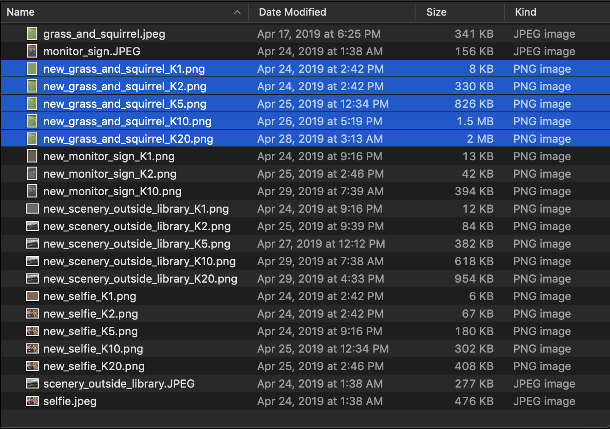
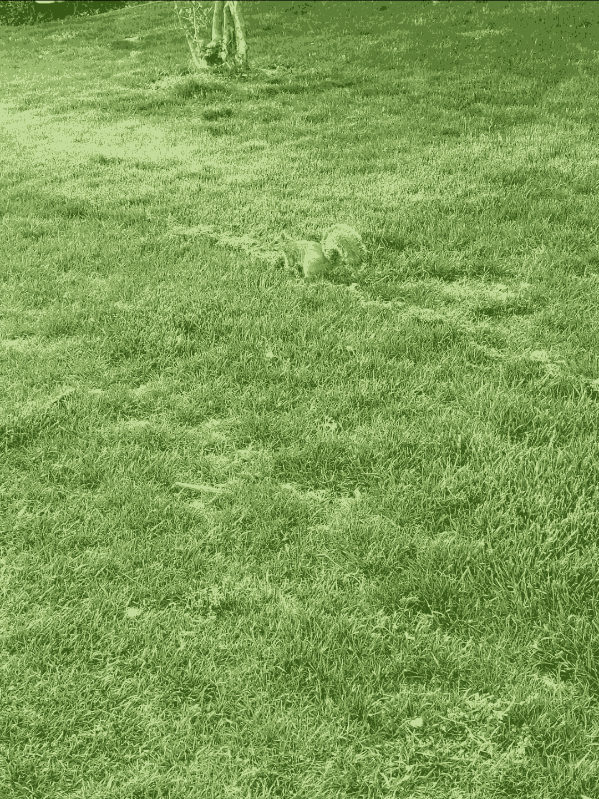

Our answers to Step 2
Q1. What did you find concerning the relationship between k and the size of the new image?
Answer: We found that as the value of the K increases, the size of the new image increases.

For example, for this grass and squirrel picture, we can clearly see the sizes of the new pictures corresponding to the K = 1, 2, 5, 10, 20 are 8KB, 300KB, 826KB, 1.5M and XXMB. The same pattern applies to other pictures as well.
Q2. For each of your photos, which k is the best you think? Why?
Answer:
- For the photo of the scenery, we think K = 10
K = 5
- For the photo of our selfie, we think K = 10 is the best, because in K = 10 photo the main information converyed from this image, such as the colors of our clothes, the skin tone of our happy faces and the backgroud are sufficient to express our dressing, emotion and the place we took the selfie, which are the main ideas that should be expressed inside of the original photo. While in K = 5 photo, our skin tone look pale and the colors are haploid, which will not tell how happy and energetic we are in this selfie. While for K = 20, although the representability of this picture is better then K = 10 in the prespective of color, it is trivial to express the main ideas in this photo.

K = 5
- For the photo of grass and squirrel, we actually think no K is better than the other, because under each K (except K = 1), they all depict both grass and the squirrel as green. The only difference among each K is just more details are drawn as K increases, or say the photo becomes more sharp and clear. When we took this photo, originally we thought K = 2 should be the best for this photo, since there are two base colors in this photo - brown as the squirrel and tree stump and green as the grass, but when we run our algorithm we realized that the initial pixel centers were picked randomly in the photo. As most part of this photo is green and the resolution of this photo is large(taken by a 12.2 MP camera on Pixel 3), there's high probability that the initial pixel centers would fall into the green regions, since the K values we selected are comparatively tiny compared to the resolution of the photo. If we stipulate that the pixel values of our initial picked centers must be very far from each other(under the context of their Euclid distances, in our case the centers could be green and brown), then we may argue that K = 2 or K = 5 would be the best K value for this photo.